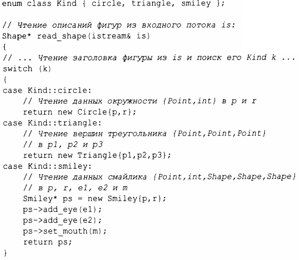
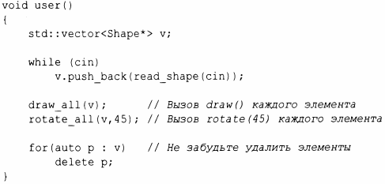

⇐4.5 Иерархии классов Содержание 4.5.2 Навигация по иерархии⇒
Иерархия классов предоставляет две разновидности преимуществ.
Конкретные классы - особенно с небольшими представлениями - очень похожи на встроенные типы: мы определяем их как локальные переменные, обращаемся к ним с помощью имен, копируем их и т.д. Классы в иерархии классов различаются - обычно для них выделяется память с использованием оператора new, и доступ к ним выполняется через указатели или ссылки. Например, рассмотрим функцию, которая считывает данные, описывающие фигуры, из входного потока и создает соответствующие объекты Shape:
Программа может использовать функцию чтения фигуры следующим образом:
Очевидно, что пример упрощен (особенно в отношении обработки ошибок), но он наглядно иллюстрирует, что user() не имеет абсолютно никакого представления о том, с какими видами фигур он работает. Код user() может быть скомпилирован один раз и позже использоваться для новых видов фигур, добавленных в программу. Обратите внимание, что нет никаких указателей на фигуры вне user (), поэтому за освобождение объектов отвечает сама функция. Это делается с помощью оператора delete, полагаясь при этом на виртуальный деструктор Shape. Поскольку деструктор является виртуальным, delete вызывает деструктор для наиболее позднего производного класса. Это имеет решающее значение, поскольку производный класс может захватывать всевозможные ресурсы (такие, как дескрипторы файлов, блокировки и выходные потоки), которые должны быть освобождены. В нашем случае Srniley удаляет свои объекты eyes и rnouth. Как только это сделано, вызывается деструктор Circle. Объекты строятся конструкторами "снизу вверх" (сначала - базовый), а уничтожаются деструкторами "сверху вниз" (сначала - производные).